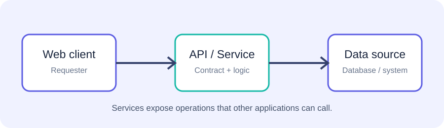

What to learn: An API lets one program request structured information from another.
1. Introduction to web services
A web service is a software interface that allows applications to communicate over a network using agreed formats and protocols. It supports machine-to-machine interaction across different platforms.
2. Web service architecture
A common model has a service provider that publishes a service, a service requester that uses it, and a service description that explains how to communicate. Services exchange requests and responses over a network.
3. SOAP
SOAP (Simple Object Access Protocol) is a messaging protocol that uses XML-formatted envelopes. A SOAP message commonly contains an Envelope, optional Header and Body. SOAP is designed for structured, standardised message exchange.
4. WSDL
WSDL (Web Services Description Language) is an XML-based description of a web service. It describes operations, messages, data types, bindings and service endpoints so a client can understand how to call the service.
5. UDDI
UDDI (Universal Description, Discovery and Integration) is a registry concept for publishing and discovering web services. It can help organisations find service descriptions and providers.
6. Developing and deploying services
A typical workflow is to define the service contract, implement operations, test requests and responses, deploy the service to a server or hosting environment, secure it, and monitor its availability.
7. AJAX
AJAX (Asynchronous JavaScript and XML) is a technique for communicating with a server in the background and updating part of a page. Modern applications commonly exchange JSON rather than XML, often using the Fetch API.
.then(response => response.json())
.then(data => console.log(data));
8. How AJAX improves performance
Because the browser can request only the data it needs, it may update a small section instead of reloading the entire page. This can make interactions feel faster, reduce unnecessary transfers and improve user experience.
9. Programming idea and CORBA
A typical asynchronous flow is: user action → JavaScript sends a request → server processes it → response returns → JavaScript updates the page. CORBA (Common Object Request Broker Architecture) is a standard that enables distributed objects written in different languages to communicate through an Object Request Broker.
Key terms to remember
- DNS: A naming system that maps domain names to IP addresses.
- AJAX: A technique for asynchronous browser-server communication.
- Web 4.0: An emerging concept for intelligent, connected web experiences.
Quick revision quiz
What does WSDL describe?